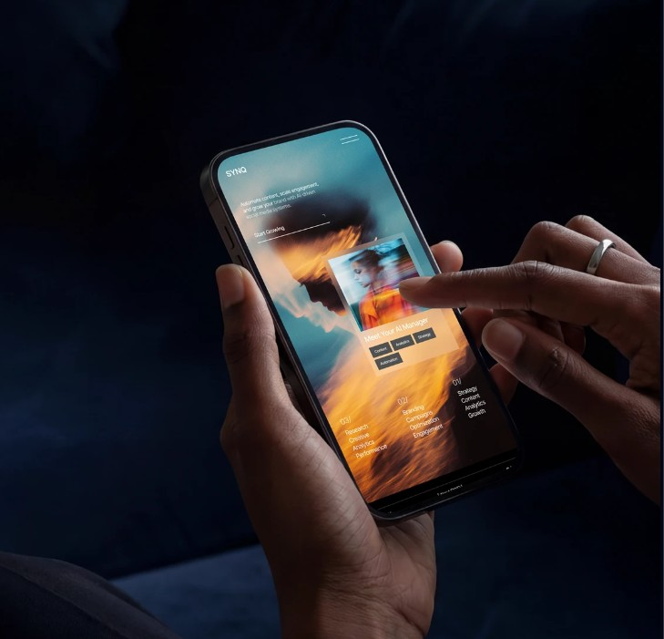

Pourquoi le rôle des agences doit être repensé à l’ère de l’IA
L’intelligence artificielle sait déjà écrire, dessiner, monter des vidéos et analyser des chiffres. Pour une agence, ce n’est pas une menace : c’est une guidance de plus, à condition de savoir où la mettre.

Quand on parle d’intelligence artificielle dans le marketing, on entend souvent la même inquiétude : « les agences vont disparaître ». Nous pensons exactement le contraire. L’IA n’est pas l’ennemie de notre métier. C’est une guidance de plus, un nouvel outil dans l’atelier, comme l’ont été avant elle l’ordinateur, Photoshop ou les réseaux sociaux.
Ce qui change, ce n’est pas l’utilité des agences. C’est leur façon de travailler. Voici comment nous voyons ce nouveau rôle chez kréova.
1. L’IA, un nouvel allié dans l’atelier
L’IA accélère tout ce qui prenait du temps sans apporter beaucoup de valeur : préparer un premier jet de texte, décliner un visuel en plusieurs formats, trier des données, résumer des retours clients. Ce qui prenait une journée prend parfois une heure.
Ce temps gagné ne disparaît pas : il revient à ce qui compte vraiment. Plus de temps pour comprendre le client, tester des idées, affiner un message. Bien utilisée, l’IA ne remplace pas le travail de l’agence, elle le libère.
2. Le vrai risque : l’utiliser sans direction
L’IA est un excellent guide, mais elle a besoin d’un cap. Laissée seule, elle produit des contenus corrects mais génériques : mêmes tournures, mêmes visuels lisses, même ton neutre. Une marque qui publie ainsi finit par parler comme toutes les autres.
Le danger n’est donc pas l’outil, c’est l’absence de stratégie autour de l’outil. Et c’est précisément là qu’une agence a toute sa place.
3. Ce que l’IA apporte, et ce que l’humain garde
Le duo fonctionne parce que chacun fait ce qu’il fait le mieux. L’IA guide, propose, calcule et accélère. L’humain garde :
- La stratégie. Savoir à qui l’on parle, pourquoi, et ce que l’on veut obtenir avant de produire quoi que ce soit.
- Le jugement. Choisir, parmi dix propositions, celle qui sert vraiment la marque.
- La connaissance du terrain. Comprendre un marché local, ses codes, son humour, ses langues : au Maroc, on ne parle pas à un client d’Agadir comme à un client de Paris.
- La direction créative. Donner une identité reconnaissable et la garder cohérente sur chaque support.
- La relation. Écouter, conseiller, rassurer : aucune machine ne remplace la confiance entre une marque et son agence.
4. Une agence augmentée, pas remplacée
Le nouveau rôle d’une agence, c’est de mettre l’IA au bon endroit. Elle prend en charge le répétitif : la préparation des contenus, le reporting, les réponses aux questions fréquentes, le suivi des prospects. L’équipe se concentre sur les idées, les décisions et la relation avec le client.
C’est pour cela que kréova s’organise autour de trois expertises qui se complètent :
- Automatisation IA : des outils et des flux automatisés qui font gagner des heures chaque semaine à nos clients, de la prospection au service client.
- Marketing digital : une stratégie, une identité et des contenus pensés par des humains et guidés par l’IA.
- Développement web : des sites rapides et clairs, reliés à ces automatisations pour transformer les visites en clients.
Ensemble, elles forment un système qui travaille pour la marque, même quand personne n’est derrière l’écran.
5. Ce que cela change pour votre entreprise
Si vous travaillez avec une agence, ou si vous comptez le faire, quelques questions simples permettent de savoir si elle a bien intégré l’IA :
- Est-ce qu’elle commence par comprendre vos objectifs avant de parler de contenus ?
- Est-ce qu’elle utilise l’IA pour aller plus vite, et peut vous expliquer où et pourquoi ?
- Est-ce qu’elle peut automatiser certaines de vos tâches, pas seulement produire pour vous ?
- Est-ce qu’elle vous montre des résultats mesurés, pas seulement un nombre de publications ?
En résumé
L’IA n’est pas là pour remplacer les agences, elle est là pour les guider et les rendre plus fortes. Les agences qui l’adoptent avec une vraie stratégie vont plus vite, plus loin, et offrent plus de valeur à leurs clients.
C’est le choix de kréova : faire de l’IA une alliée, au service de votre stratégie et de votre créativité, pour que votre marque avance plus vite sans perdre ce qui la rend unique.
Vous voulez savoir comment l’IA peut guider votre entreprise ?
Parlons de votre projet